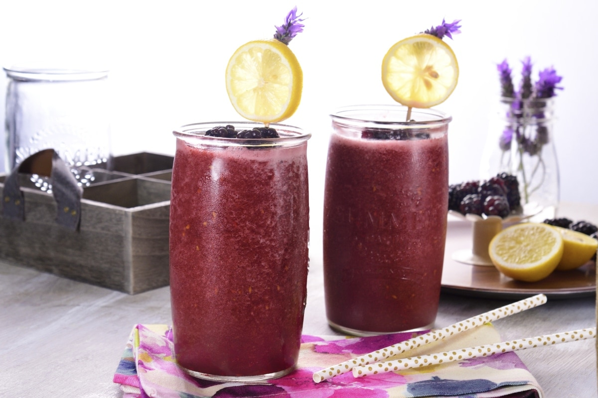
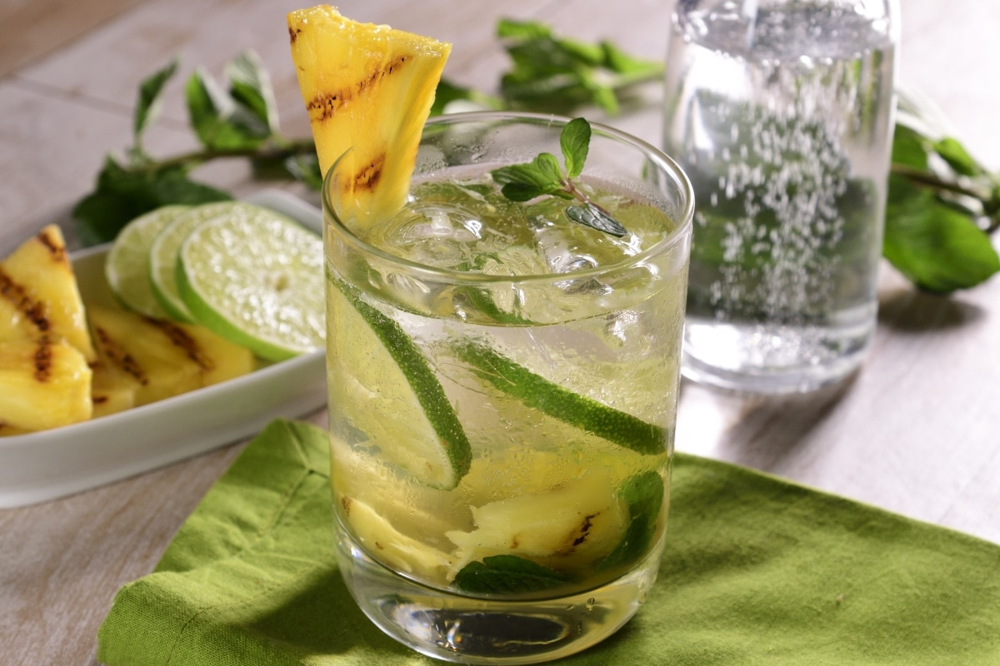
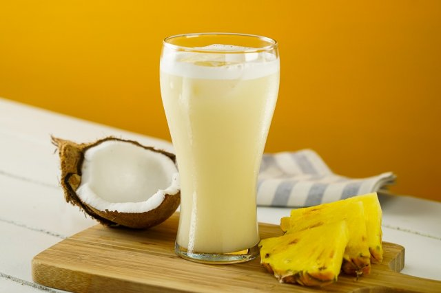
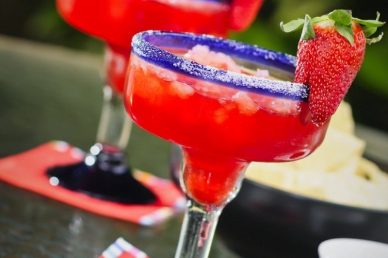
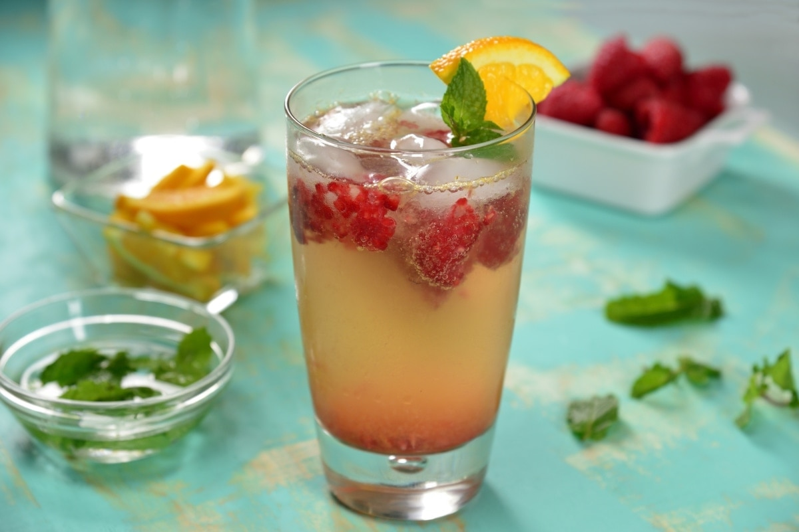

Bebidas sin alcohol
Frappé de Zarzamora con Lavanda y Té Negro
Ingredientes
- 3/4 tazas de zarzamora
- 1/4 tazas de agua
- 3 lavandas, flor fresca
- 1 anís estrella
- 1 Lipton Té Negro Limón
- al gusto de hielo
- 1 brocheta, de zarzamora, para decorar
- 2 lavandas, flor, para decorar
Preparación
- En una olla a fuego medio, cocina las zarzamoras con el agua, la lavanda y el anís alrededor de 10 minutos o hasta que la fruta se deshaga. Enfría.
- Licúa el Lipton té negro limón, con el jarabe y suficiente hielo para hacer un frappé.
- Sirve de inmediato en un vaso alto, decora con una brocheta de zarzamoras y lavanda fresca.
Mojito sin alcohol de té verde con Piña Rostizada
Ingredientes
- 1 rodaja de piña, medianamente gruesa
- 1 limón, sin semilla, en rodajas
- 1 cucharada de hierbabuena
- 100 mililitros de Lipton Té Verde Cítricos Light
- 100 mililitros de agua mineral
- 2 hojas de hierbabuena, para decorar
Preparación
- Calienta una sartén parrilla a fuego alto y parrilla la rodaja de piña por ambos lados hasta que se marque.
- Corta la rodaja de piña en trozos pequeños y reserva un pedacito para decorar.
- Vierte la piña en un vaso y agrega las rodajas de limón y la hierbabuena. Con ayuda de un mortero o una cuchara tritura las frutas para liberar el sabor de éstas.
- Rellena el vaso con el Lipton té verde cítricos Light y agua mineral. Decora con piña y hierbabuena.
Piña Colada sin alcohol
Ingredientes
- 1 chorrito de jarabe natural
- 2/3 jugos de piña
- 1/3 cremas de coco
- 10 hielos
Preparación
- Vierte en la licuadora la crema de coco, el jugo de piña, el jarabe natural y el hielo.
- Dejar que se mezcle hasta que el hielo forme frape. Sírvase de inmediato y decorese con un trozo de piña y una cereza.
Margarita de Fresa sin alcohol
Ingredientes
- 5 hielos
- 10 fresas
- 1 cucharada de azúcar
- 1/2 onzas de jugo de fresa, Boing
- 1 1/2 onzas de jugo de limón
- 2 cucharadas de chile piquín
Preparación
- Poner todos los ingredientes en una licuadora hasta que se deshagan las fresas y se vuelva tipo frappe con el hielo.
Decorar con una rebanada de fresa.
Naranjada con Frambuesa
Ingredientes
- 1 naranja
- 2 sobres de Canderel Sucaré
- 1/4 tazas de frambuesa
- 1 taza de hielo
- 1 taza de agua, mineral
- 2 rodajas de naranja
- 1 hoja de menta
Preparación
- En un vaso exprime la naranja con un colador para evitar que caigan los huesitos.
- Agrega los sobresitos de Canderel Sucaré y las frambuesas y mezcla, triturando un poco las frambuesas para que pinten la preparación.
- Agrega los hielos y rellena con agua mineral y decora con rodajas de naranja y hojitas de menta.